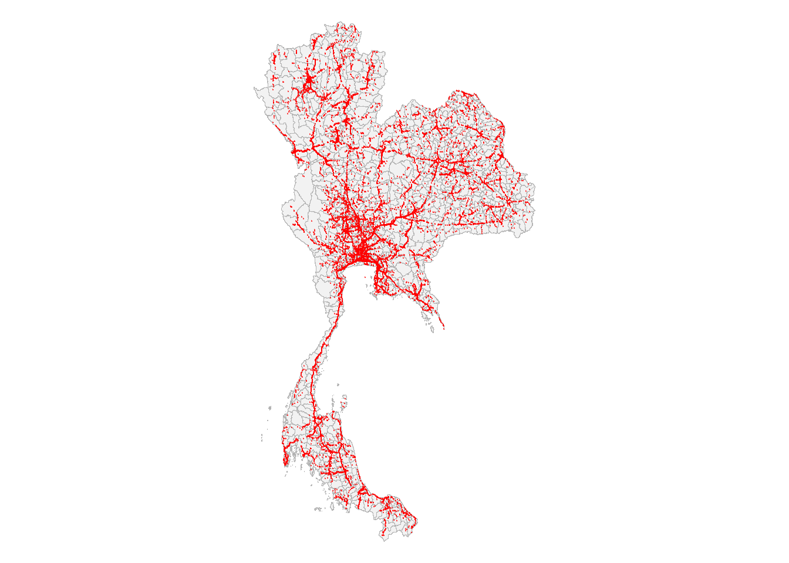
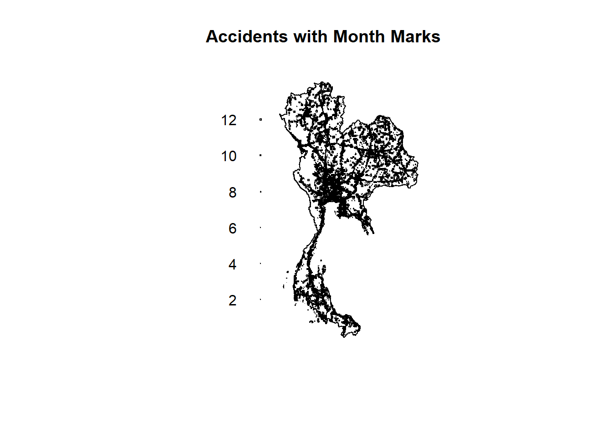

pacman::p_load(sf, spatstat, tmap, tidyverse)Take-Home Exercise 1
Overview
Public safety refers to the protection of the general public, communities, and critical infrastructure from crimes, disasters, accidents, and other major threats through coordinated government and agency action.
Geospatial analytics, supported by multi-source geospatial data and geospatial data science and analysis methods, provides powerful means to transform location-based data into visual evidence, analytical insights, and decision support. It plays an important role in areas such as law enforcement, emergency management, disaster response, transportation safety, and environmental management.
A spatial point pattern represents a collection of geographic locations at which particular events occur, such as forest-fire detections or road traffic accidents. A spatio-temporal point pattern extends this representation by incorporating the time at which each event occurs, allowing analysts to investigate how the distribution and interaction of events vary across both space and time.
Understanding where and when public-safety events occur can help planners and managers identify areas of concern, understand patterns of event occurrence, allocate resources, and develop evidence-informed strategies for prevention and response.
Objectives
This take-home exercise investigates the spatial and/or spatio-temporal patterns of public-safety point events using one the case study of Road traffic accidents within the Bangkok Greater Metropolitan Area for the selected study year 2022.
The specific objectives from this exercise are :
To prepare and integrate real-world geospatial and temporal data for spatial and spatio-temporal point-pattern analysis.
To investigate first-order properties of the point pattern by examining how the intensity or distribution of events varies across space and/or time.
To investigate second-order properties by examining whether events exhibit evidence of spatial or spatio-temporal interaction, such as clustering, inhibition, or approximate randomness.
To critically evaluate the analytical assumptions, methodological choices, and limitations associated with the selected point-pattern methods.
To communicate the analytical findings effectively through appropriate geovisualisation and geocommunication.
To translate the analytical evidence into meaningful implications for public-safety planning and management.
Data
These are the datasets used for the exercise
Thailand Road Accident Dataset
https://www.kaggle.com/datasets/thaweewatboy/thailand-road-accident-2019-2022
This is a comprehensive dataset on recorded road accidents in Thailand, spanning from approximately 2019 to 2022. For the sake of the exercise only the latest data of 2022 will be used here.
Note
The data is from the Office of the Permanent Secretary, Ministry of Transport, where for easier visualisation the public dashboard can be accessed as well.
Thailand Boundary Map
https://www.geoboundaries.org/countryDownloads.html
This is the Thailand Boundary map published by the Royal Thai Survey Department, OCHA ROAP on the geoBoundaries website in 2019 (This is also the latest version available for public download).
Getting Started - Preparation of Data
Importing of data
First the required libraries are installed/loaded into file.
Now we load in both datasets.
# Thailand Road Accident Dataset
acc<- read_csv("data/aspatial/thai_road_accident_2019_2022.csv")Rows: 81735 Columns: 18
── Column specification ────────────────────────────────────────────────────────
Delimiter: ","
chr (10): province_th, province_en, agency, route, vehicle_type, presumed_c...
dbl (6): acc_code, number_of_vehicles_involved, number_of_fatalities, numb...
dttm (2): incident_datetime, report_datetime
ℹ Use `spec()` to retrieve the full column specification for this data.
ℹ Specify the column types or set `show_col_types = FALSE` to quiet this message.Here we will check the summary of the Thailand Road Accident Dataset.
head(acc) # A tibble: 6 × 18
acc_code incident_datetime report_datetime province_th province_en
<dbl> <dttm> <dttm> <chr> <chr>
1 571905 2019-01-01 00:00:00 2019-01-02 06:11:00 ลพบุรี Loburi
2 3790870 2019-01-01 00:03:00 2020-02-20 13:48:00 อุบลราชธานี Ubon Ratchathani
3 599075 2019-01-01 00:05:00 2019-01-01 10:35:00 ประจวบคีรีขันธ์ Prachuap Khiri K…
4 571924 2019-01-01 00:20:00 2019-01-02 05:12:00 เชียงใหม่ Chiang Mai
5 599523 2019-01-01 00:25:00 2019-01-04 09:42:00 นครสวรรค์ Nakhon Sawan
6 571982 2019-01-01 00:30:00 2019-01-07 12:46:00 แม่ฮ่องสอน Mae Hong Son
# ℹ 13 more variables: agency <chr>, route <chr>, vehicle_type <chr>,
# presumed_cause <chr>, accident_type <chr>,
# number_of_vehicles_involved <dbl>, number_of_fatalities <dbl>,
# number_of_injuries <dbl>, weather_condition <chr>, latitude <dbl>,
# longitude <dbl>, road_description <chr>, slope_description <chr>Now we will load in the second dataset : Thailand Boundary Map
# Thailand Boundary Map
map <- st_read("data/geospatial/Thai/geoBoundaries-THA-ADM2.shp")Reading layer `geoBoundaries-THA-ADM2' from data source
`C:\cjmheidii\ISSS626 - Geospatial\Hands-on_Ex\data\geospatial\Thai\geoBoundaries-THA-ADM2.shp'
using driver `ESRI Shapefile'
Simple feature collection with 928 features and 5 fields
Geometry type: MULTIPOLYGON
Dimension: XY
Bounding box: xmin: 97.34336 ymin: 5.613038 xmax: 105.637 ymax: 20.46507
Geodetic CRS: WGS 84# Column names
names(map)[1] "shapeName" "shapeISO" "shapeID" "shapeGroup" "shapeType"
[6] "geometry" # Preview attributes without geometry
st_drop_geometry(map) %>% head(10) shapeName shapeISO shapeID shapeGroup shapeType
1 Akat Amnuai <NA> 78962969B83463915016953 THA ADM2
2 Amphawa <NA> 78962969B68169586280131 THA ADM2
3 Ao Luek <NA> 78962969B54777225393770 THA ADM2
4 Aranyaprathet <NA> 78962969B18658138340114 THA ADM2
5 At Samat <NA> 78962969B71289419444255 THA ADM2
6 Bacho <NA> 78962969B22586560209583 THA ADM2
7 Bamnet Narong <NA> 78962969B89125519314325 THA ADM2
8 Ban Bueng <NA> 78962969B10446742029293 THA ADM2
9 Ban Chang <NA> 78962969B38445835691017 THA ADM2
10 Ban Dan <NA> 78962969B34946496747939 THA ADM2st_drop_geometry(map) %>% glimpse()Rows: 928
Columns: 5
$ shapeName <chr> "Akat Amnuai", "Amphawa", "Ao Luek", "Aranyaprathet", "At S…
$ shapeISO <chr> NA, NA, NA, NA, NA, NA, NA, NA, NA, NA, NA, NA, NA, NA, NA,…
$ shapeID <chr> "78962969B83463915016953", "78962969B68169586280131", "7896…
$ shapeGroup <chr> "THA", "THA", "THA", "THA", "THA", "THA", "THA", "THA", "TH…
$ shapeType <chr> "ADM2", "ADM2", "ADM2", "ADM2", "ADM2", "ADM2", "ADM2", "AD…# How many unique values per column
st_drop_geometry(map) %>% summarise(across(everything(), n_distinct)) shapeName shapeISO shapeID shapeGroup shapeType
1 918 1 928 1 1Data Inspection & Cleaning.
A Point event is basically defined as a single record within the dataset, or a specific road traffic accident Each event will be geolocated using the longitude and latitude columns.
So it is important that any duplicated rows of data do not exist and we handle all missing or invalid coordinates, which will be done in this sub-section.
Several things will checked upon within this subsection. These include
Handling of Invalid/Missing Locations
Removal of Unnecessary Columns & rows
Ensuring Unique Rows
Missing and Invalid Coordinates
Rows with missing or invalid coordinates (NA in latitude or longitude) were identified and handled. First, we checked for rows with unknown or NA provinces. Because the latitude and longitude columns provide specific point locations but lack the contextual information needed for readable insights (e.g., “which province?”), we prioritized recovering the province attribute. We successfully recovered 25 out of 34 missing provinces (73.5%) by spatially joining the coordinates with the ADM1 shapefile. The remaining 9 rows, which lacked both coordinates and province data, were excluded from the analysis.
Handling Invalid/Missing Locations
First, to ensure there is no invalid rows (error due to location column issues, we will check for rows with unknown or NA provinces).
This is important since during analysis when writing out the insights, we will link back to the province column rather than the latitude and longitutde column for readers to understand better. The latitude and longitude gives the specific point of the accident but with just these 2 columns readers dont know which city or province we are going to talk about.
Note
If there are any unknown province locations, check for unknown latitude and longitude. To see how much can be recovered since Lat and Long gives the specific point. If we have latitude and longitude in the missing columns, it is possible to recover province.
unknown_rows <- acc %>%
filter(province_en == "unknown" | is.na(province_en))
unknown_with_xy <- unknown_rows %>%
filter(!is.na(latitude), !is.na(longitude))
unknown_no_xy <- unknown_rows %>%
filter(is.na(latitude) | is.na(longitude))
tibble(
category = c("Unknown province (total)",
"→ with coordinates (recoverable)",
"→ without coordinates (need manual or drop)"),
n = c(nrow(unknown_rows),
nrow(unknown_with_xy),
nrow(unknown_no_xy)),
pct_of_unknown = round(100 * n / nrow(unknown_rows), 1)
)# A tibble: 3 × 3
category n pct_of_unknown
<chr> <int> <dbl>
1 Unknown province (total) 34 100
2 → with coordinates (recoverable) 25 73.5
3 → without coordinates (need manual or drop) 9 26.5So we can see that there are 25 coordinates that can actually be recovered from the 34 with missing province locations. This is good since 73.5% of missing values can be recovered.
Through analysis of the shapefile, ADM 2 looks into the district and not province. So it will not be possible to use our current ADM 2 shapefile of Thailand to attain the province values to need to link the coordinates. We will use ADM 1 instead. Now the data will be loaded in.
provinces <- st_read("data/geospatial/Thai_province/geoBoundaries-THA-ADM1.shp") %>%
st_transform(4326)Reading layer `geoBoundaries-THA-ADM1' from data source
`C:\cjmheidii\ISSS626 - Geospatial\Hands-on_Ex\data\geospatial\Thai_province\geoBoundaries-THA-ADM1.shp'
using driver `ESRI Shapefile'
Simple feature collection with 77 features and 5 fields
Geometry type: MULTIPOLYGON
Dimension: XY
Bounding box: xmin: 97.34381 ymin: 5.612851 xmax: 105.6368 ymax: 20.46483
Geodetic CRS: WGS 84# Check the province name column to ensure we can use ADM1
names(provinces)[1] "shapeName" "shapeISO" "shapeID" "shapeGroup" "shapeType"
[6] "geometry" # Isolate the rows we want to recover, so it dosent affect the main dataset
unknown_with_xy <- acc %>%
filter(
(province_en == "unknown" | is.na(province_en)) &
!is.na(latitude) & !is.na(longitude)
)
pts <- st_as_sf(
unknown_with_xy,
coords = c("longitude", "latitude"),
crs = 4326
)
# Here is where the join is done to connect the datapoints
pts_joined <- st_join(pts, provinces, join = st_within)
pts_joined %>%
st_drop_geometry() %>%
select(acc_code, shapeName) %>%
head()# A tibble: 6 × 2
acc_code shapeName
<dbl> <chr>
1 572732 <NA>
2 573720 <NA>
3 574701 <NA>
4 574704 <NA>
5 575103 <NA>
6 1616332 <NA> missed <- pts_joined %>% filter(is.na(shapeName))
nrow(missed)[1] 8# In case of any misses with the provinces, this is a fallback to link up to nearest province
if (nrow(missed) > 0) {
idx <- st_nearest_feature(missed, provinces)
pts_joined$shapeName[is.na(pts_joined$shapeName)] <- provinces$shapeName[idx]
}
# Merge accounts back to actual dataset
acc_joined <- acc %>%
left_join(
pts_joined %>%
st_drop_geometry() %>%
select(acc_code, recovered_province = shapeName),
by = "acc_code"
) %>%
mutate(
province_en = ifelse(
province_en == "unknown" | is.na(province_en),
recovered_province,
province_en
)
) %>%
select(-recovered_province)
acc <- acc_joined# Verification, now there should be 9 missing data points rather than 34!
acc %>%
filter(is.na(province_en)) %>%
nrow()[1] 9Now that we’ve settled the 24 recoverable records of data, we will now remove the 9 missing data points where it is impossible to recover.
acc<- acc %>%
filter(!is.na(province_en))
# Verify that there are now 0 rows with missing province
acc %>%
filter(is.na(province_en)) %>%
nrow()[1] 0Removal of Unnecessary Rows
The current dataset is from 2019-2022, since we are aiming to only look at 2022 data we want to drop the unnecessary rows (year 2019-2021).
Note
We will only look at the range of year 2022 through the use of incident_datetime since we want to analyse the accidents that occurred in 2022 instead of report_datetime (refers to the date and time when the accident is recorded)
This is important because there time is needed after the accident has occurred for it to be recorded, resulting in a reporting lag. Therefore, this distinction is highlighted to show that the correct column is used for the filtering together with the importance of this distinction.
# The date and Time will be parsed to Thailand timezone, so hardware (computer) which is in Singapore timezone can accurately filter the data to year 2022.
acc <- acc %>%
mutate(
incident_datetime = ymd_hms(incident_datetime, tz = "Asia/Bangkok"),
report_datetime = ymd_hms(report_datetime, tz = "Asia/Bangkok")
)Warning: There were 2 warnings in `mutate()`.
The first warning was:
ℹ In argument: `incident_datetime = ymd_hms(incident_datetime, tz =
"Asia/Bangkok")`.
Caused by warning:
! 118 failed to parse.
ℹ Run `dplyr::last_dplyr_warnings()` to see the 1 remaining warning.# Filter so that only year 2022 data exists in current dataset
acc<- acc %>%
filter(year(incident_datetime) == 2022)
# Verify that the datetime is what we need
nrow(acc)[1] 21006range(acc$incident_datetime) [1] "2022-01-01 00:01:00 +07" "2022-12-31 23:55:00 +07"Removal of Columns
Now we look at Removal of columns, where province_th and route columns will be removed.
Note
From the previous code input, we can see the first few rows of the data is displayed to have a rough sense of the data.
There is a “Duplicated” Column where “province_th” is the same as “province_en” but in the Thai language. Since we cannot understand Thai, we will remove this column instead of province_en.
Furthermore, route column is redundant since the coordinates are given through the latitude and longitude data columns. The inconsistent description of junctions, highway numbers and sectors are also the reason why this column should not be used, since it will only cause more confusion in analysis process.
# Drop unncessary columns
acc<- acc %>% select(-route, -province_th)
# Now to confirm the correct columns are dropped. We will expect to see 16 columns instead. (6x16)
head(acc) # A tibble: 6 × 16
acc_code incident_datetime report_datetime province_en agency
<dbl> <dttm> <dttm> <chr> <chr>
1 6566872 2022-01-01 00:01:00 2022-01-02 11:45:00 Chai Nat depar…
2 6566880 2022-01-01 00:01:00 2022-01-02 11:44:00 Maha Sarakham depar…
3 5706553 2022-01-01 00:03:00 2022-02-09 08:41:00 Chumphon depar…
4 5485750 2022-01-01 00:05:00 2022-01-02 06:21:00 Phuket depar…
5 5624452 2022-01-01 00:05:00 2022-01-24 09:59:00 Udon Thani depar…
6 6566842 2022-01-01 00:05:00 2022-01-02 11:46:00 Phra Nakhon Si Ayutth… depar…
# ℹ 11 more variables: vehicle_type <chr>, presumed_cause <chr>,
# accident_type <chr>, number_of_vehicles_involved <dbl>,
# number_of_fatalities <dbl>, number_of_injuries <dbl>,
# weather_condition <chr>, latitude <dbl>, longitude <dbl>,
# road_description <chr>, slope_description <chr>Ensuring Unique rows in data
Ephasizing again on the importance of having each point to represent an independent event, it is imperative that every accident within the dataset is unique!
Therefore, to make sure there is no duplicated rows any(duplicated(acc)) is used to ensure that every accident (full row) is unique.
To double check, we also use the any(duplicated(acc)) to verify that there is no duplicate or repeated observations in the cleaned dataset which looks at the account code itself which is said to be unique. Especially since any(duplicated(acc)) will not be able to detect that there is duplicate record of E.g Accident ABC if any other column within the 2 rows are different.
# This looks for duplicates across the entire row, where it only records if all values within one row is the same as another
any(duplicated(acc))[1] FALSE# This ensures that all acccount codes (acc_code) is different and unique, so that we arent looking at multiple accident accounts.
sum(duplicated(acc$acc_code))[1] 0Since FALSE and 0 is returned its confirmed all records are unique, and we can proceed on with drawing out the plots.
Assumptions & Decisions made
Assumptions made
Some assumptions made in this exercise for the analysis to be valid. The list is as follows
Homogeneity
It is assumed that the risk of every accident occuring across Thailand is uniform, or exactly the same. In reality, there are many variables that can influence this risk level like the volume of traffic or level of maintenance of the roads or etc. This assumption will be put to allow exploratory trend detection.
Independence
We assume that each accident is independent of each other. There can be times in reality where an accident can occur due to the occurrence of another, this is known as multi-vehicle crashes. Hence multiple points in this case will be recorded within these datasets, but we will assume in this exercise that all accidents are recorded as separate events.
Isotropy
We assume here that the intensity of the accidents is the same in all directions. In reality, road networks are linear, so accidents are constrained to roads. So with the assumption, the analysis can be a relatively useful form of visualisation on risk.
Decisions made
The Coordinate Reference System (CRS) was decided to be changed within the Thailand Boundary from WGS 84 (EPSG:4326) to UTM Zone 47N (EPSG:32647). This is essential because UTM coordinates are in meters, which allows distance-based methods (bandwidth selection, Ripley’s K, edge correction) to operate on meaningful planar distances rather than degrees.
Overview plot
This overview plot is made to ensure that the data is loaded properly and there are no errors in data manipulation or cleaning.
acc <- acc %>%
filter(!is.na(latitude), !is.na(longitude)) %>%
st_as_sf(coords = c("longitude", "latitude"), crs = 4326)
acc <- st_transform(acc, 32647)
map <- st_transform(map, 32647)# Now we plot an overview on the tmap.
tm_shape(map) +
tm_polygons(col = "grey95", border.col = "grey70", lwd = 0.1) +
tm_shape(acc) +
tm_dots(col = "red", size = 0.02, alpha = 0.5) +
tm_layout(frame = FALSE)── tmap v3 code detected ───────────────────────────────────────────────────────[v3->v4] `tm_polygons()`: use 'fill' for the fill color of polygons/symbols
(instead of 'col'), and 'col' for the outlines (instead of 'border.col').
[v3->v4] `tm_dots()`: use `fill_alpha` instead of `alpha`.
This message is displayed once every 8 hours.
Note
The reason why Tmap is being used instead of the usual plot() :
tmap is a package helps to render the ploygons better than plots, preventing overlapping borders like what plot() will do. Basically it is better at rendering and plotting the multi-ploygon background more clearly.
First-Order Point Pattern Analysis
Computing STKDE by Month
Why do I want to compute STKDE by month? What do i expect to be able to analyse by doing this?
library(sf)
library(spatstat)
# 1. Union all 928 district polygons into a SINGLE polygon
# st_union() dissolves internal boundaries
thailand_union <- map %>%
st_union() %>%
st_sf() # wrap back into an sf object for as.owin()
# 2. Convert the single-polygon sf to an owin
thailand_owin <- as.owin(thailand_union)
# 3. Plot to verify the shape looks like Thailand
plot(thailand_owin, main = "Thailand Study Window (owin)")
# Create the Month_num column in acc_sf
acc$Month_num <- as.numeric(format(acc$incident_datetime, "%m"))
acc_month <- acc %>%
select(Month_num)
# Now we convert to ppp
acc_month_ppp <- as.ppp(acc_month)
# set window to thailand boundary
Window(acc_month_ppp) <- thailand_owin
# Plot to confirm the window and points look right
plot(acc_month_ppp, main = "Accidents with Month Marks")
# Now we print out a summary to ensure the class is correct
acc_month_pppMarked planar point pattern: 20816 points
marks are numeric, of storage type 'double'
window: polygonal boundary
enclosing rectangle: [325178.8, 1213655.7] x [620860.6, 2263241] unitssummary(acc_month_ppp)Marked planar point pattern: 20816 points
Average intensity 4.033167e-08 points per square unit
*Pattern contains duplicated points*
Coordinates are given to 10 decimal places
marks are numeric, of type 'double'
Summary:
Min. 1st Qu. Median Mean 3rd Qu. Max.
1.000 3.000 6.000 6.328 9.000 12.000
Window: polygonal boundary
728 separate polygons (no holes)
vertices area relative.area
polygon 1 169318 5.13717e+11 9.95e-01
polygon 2 51 2.53355e+03 4.91e-09
polygon 3 1505 6.23850e+06 1.21e-05
polygon 4 42 2.49113e+04 4.83e-08
polygon 5 61 2.23047e+04 4.32e-08
polygon 6 56 4.39488e+05 8.52e-07
polygon 7 46 7.65029e+03 1.48e-08
polygon 8 29 9.27916e+03 1.80e-08
polygon 9 57 8.02262e+03 1.55e-08
polygon 10 296 3.40854e+05 6.60e-07
polygon 11 111 6.79954e+05 1.32e-06
polygon 12 42 3.37968e+04 6.55e-08
polygon 13 218 5.29394e+06 1.03e-05
polygon 14 50 2.05900e+05 3.99e-07
polygon 15 268 6.79882e+06 1.32e-05
polygon 16 34 1.55825e+05 3.02e-07
polygon 17 51 3.93134e+04 7.62e-08
polygon 18 78 1.75837e+05 3.41e-07
polygon 19 101 5.42686e+05 1.05e-06
polygon 20 256 4.74527e+05 9.19e-07
polygon 21 57 9.19444e+03 1.78e-08
polygon 22 55 2.87916e+05 5.58e-07
polygon 23 52 6.27620e+04 1.22e-07
polygon 24 447 1.43133e+07 2.77e-05
polygon 25 103 1.38545e+05 2.68e-07
polygon 26 104 5.70710e+04 1.11e-07
polygon 27 193 4.59997e+05 8.91e-07
polygon 28 68 2.41811e+04 4.69e-08
polygon 29 208 9.62851e+05 1.87e-06
polygon 30 94 1.59662e+05 3.09e-07
polygon 31 178 8.27111e+05 1.60e-06
polygon 32 147 1.18435e+05 2.29e-07
polygon 33 44 1.13989e+04 2.21e-08
polygon 34 92 6.90823e+04 1.34e-07
polygon 35 83 3.93177e+05 7.62e-07
polygon 36 49 2.10666e+04 4.08e-08
polygon 37 49 6.59279e+04 1.28e-07
polygon 38 56 5.18088e+03 1.00e-08
polygon 39 70 2.71427e+04 5.26e-08
polygon 40 170 6.79048e+05 1.32e-06
polygon 41 102 7.31474e+04 1.42e-07
polygon 42 340 4.09442e+06 7.93e-06
polygon 43 981 5.02741e+06 9.74e-06
polygon 44 35 4.46463e+03 8.65e-09
polygon 45 54 3.50271e+05 6.79e-07
polygon 46 117 1.24973e+05 2.42e-07
polygon 47 140 1.09669e+05 2.12e-07
polygon 48 50 1.03162e+05 2.00e-07
polygon 49 46 1.22206e+04 2.37e-08
polygon 50 60 2.94996e+04 5.72e-08
polygon 51 188 1.49212e+06 2.89e-06
polygon 52 67 6.80527e+05 1.32e-06
polygon 53 101 1.24894e+05 2.42e-07
polygon 54 67 2.76952e+04 5.37e-08
polygon 55 38 3.01574e+05 5.84e-07
polygon 56 53 1.26348e+04 2.45e-08
polygon 57 71 6.96480e+04 1.35e-07
polygon 58 93 1.16022e+05 2.25e-07
polygon 59 270 6.13524e+05 1.19e-06
polygon 60 115 9.76534e+04 1.89e-07
polygon 61 289 4.90893e+05 9.51e-07
polygon 62 81 2.96315e+03 5.74e-09
polygon 63 101 7.10528e+04 1.38e-07
polygon 64 37 2.42666e+03 4.70e-09
polygon 65 76 9.69580e+03 1.88e-08
polygon 66 108 4.07154e+03 7.89e-09
polygon 67 280 4.24084e+05 8.22e-07
polygon 68 166 5.62030e+04 1.09e-07
polygon 69 115 2.36542e+05 4.58e-07
polygon 70 4396 2.10438e+08 4.08e-04
polygon 71 85 5.63983e+04 1.09e-07
polygon 72 60 8.12382e+03 1.57e-08
polygon 73 62 6.58777e+04 1.28e-07
polygon 74 52 5.27989e+04 1.02e-07
polygon 75 134 2.86196e+03 5.55e-09
polygon 76 54 9.21124e+04 1.78e-07
polygon 77 52 3.61962e+04 7.01e-08
polygon 78 68 1.02026e+05 1.98e-07
polygon 79 49 4.19303e+04 8.12e-08
polygon 80 37 1.40027e+04 2.71e-08
polygon 81 210 3.76924e+05 7.30e-07
polygon 82 86 2.75512e+05 5.34e-07
polygon 83 8 7.96410e+03 1.54e-08
polygon 84 38 7.22431e+04 1.40e-07
polygon 85 48 3.33832e+04 6.47e-08
polygon 86 46 2.94345e+04 5.70e-08
polygon 87 32 6.35188e+03 1.23e-08
polygon 88 342 4.03959e+06 7.83e-06
polygon 89 435 7.31054e+05 1.42e-06
polygon 90 233 4.78908e+05 9.28e-07
polygon 91 51 5.01728e+03 9.72e-09
polygon 92 116 3.62860e+05 7.03e-07
polygon 93 123 7.50947e+04 1.45e-07
polygon 94 120 8.15175e+04 1.58e-07
polygon 95 108 2.78359e+06 5.39e-06
polygon 96 55 2.11686e+05 4.10e-07
polygon 97 362 1.86320e+06 3.61e-06
polygon 98 160 5.21459e+05 1.01e-06
polygon 99 32 6.70188e+03 1.30e-08
polygon 100 30 7.97220e+03 1.54e-08
polygon 101 130 1.97501e+06 3.83e-06
polygon 102 1399 1.22482e+07 2.37e-05
polygon 103 57 9.17313e+04 1.78e-07
polygon 104 59 8.59340e+03 1.66e-08
polygon 105 88 6.72183e+04 1.30e-07
polygon 106 79 3.91725e+04 7.59e-08
polygon 107 57 1.80912e+04 3.51e-08
polygon 108 49 1.25443e+04 2.43e-08
polygon 109 627 2.95702e+06 5.73e-06
polygon 110 51 4.08947e+04 7.92e-08
polygon 111 130 1.28922e+05 2.50e-07
polygon 112 53 3.41374e+04 6.61e-08
polygon 113 85 3.10392e+04 6.01e-08
polygon 114 153 1.31462e+05 2.55e-07
polygon 115 57 1.35510e+04 2.63e-08
polygon 116 57 1.74493e+04 3.38e-08
polygon 117 189 4.73836e+04 9.18e-08
polygon 118 110 1.28611e+05 2.49e-07
polygon 119 105 4.43573e+05 8.59e-07
polygon 120 210 3.36090e+04 6.51e-08
polygon 121 185 3.98132e+04 7.71e-08
polygon 122 2835 1.10463e+08 2.14e-04
polygon 123 134 5.49573e+04 1.06e-07
polygon 124 186 2.29056e+05 4.44e-07
polygon 125 151 1.53179e+06 2.97e-06
polygon 126 269 2.10598e+04 4.08e-08
polygon 127 263 4.71110e+04 9.13e-08
polygon 128 55 1.17346e+05 2.27e-07
polygon 129 31 3.09800e+04 6.00e-08
polygon 130 118 4.69117e+04 9.09e-08
polygon 131 270 1.22079e+06 2.37e-06
polygon 132 62 2.68314e+04 5.20e-08
polygon 133 23 2.60346e+03 5.04e-09
polygon 134 375 1.88825e+06 3.66e-06
polygon 135 46 1.37856e+04 2.67e-08
polygon 136 26 7.52813e+04 1.46e-07
polygon 137 11 1.09345e+04 2.12e-08
polygon 138 12 1.21607e+04 2.36e-08
polygon 139 87 1.61050e+05 3.12e-07
polygon 140 39 1.02309e+05 1.98e-07
polygon 141 13 2.16292e+04 4.19e-08
polygon 142 31 8.74137e+04 1.69e-07
polygon 143 10 1.61048e+04 3.12e-08
polygon 144 12 5.99257e+03 1.16e-08
polygon 145 21 8.49665e+04 1.65e-07
polygon 146 227 1.97629e+06 3.83e-06
polygon 147 51 3.94580e+04 7.65e-08
polygon 148 54 4.76934e+04 9.24e-08
polygon 149 288 8.85404e+05 1.72e-06
polygon 150 59 5.28232e+04 1.02e-07
polygon 151 23 1.12397e+04 2.18e-08
polygon 152 65 1.68816e+05 3.27e-07
polygon 153 47 8.12667e+04 1.57e-07
polygon 154 70 8.32831e+04 1.61e-07
polygon 155 50 2.66547e+04 5.16e-08
polygon 156 106 1.79497e+05 3.48e-07
polygon 157 183 7.99375e+04 1.55e-07
polygon 158 58 9.33090e+04 1.81e-07
polygon 159 44 9.01237e+03 1.75e-08
polygon 160 149 8.10477e+04 1.57e-07
polygon 161 95 7.92271e+05 1.54e-06
polygon 162 104 4.56811e+04 8.85e-08
polygon 163 50 7.07697e+04 1.37e-07
polygon 164 35 3.21371e+04 6.23e-08
polygon 165 27 2.47652e+03 4.80e-09
polygon 166 76 3.78024e+04 7.32e-08
polygon 167 27 4.82358e+04 9.35e-08
polygon 168 17 7.26445e+03 1.41e-08
polygon 169 42 3.88294e+03 7.52e-09
polygon 170 37 7.02522e+04 1.36e-07
polygon 171 25 5.40608e+04 1.05e-07
polygon 172 86 2.16590e+05 4.20e-07
polygon 173 73 2.81688e+04 5.46e-08
polygon 174 35 7.75272e+03 1.50e-08
polygon 175 157 1.83378e+07 3.55e-05
polygon 176 167 2.71430e+05 5.26e-07
polygon 177 86 2.35305e+04 4.56e-08
polygon 178 14 5.15806e+03 9.99e-09
polygon 179 62 4.49328e+04 8.71e-08
polygon 180 27 6.19557e+04 1.20e-07
polygon 181 133 5.92845e+05 1.15e-06
polygon 182 86 6.04232e+05 1.17e-06
polygon 183 68 1.31338e+05 2.54e-07
polygon 184 133 1.16705e+06 2.26e-06
polygon 185 243 3.45624e+06 6.70e-06
polygon 186 104 4.18370e+05 8.11e-07
polygon 187 471 2.39033e+07 4.63e-05
polygon 188 1775 1.22523e+08 2.37e-04
polygon 189 60 1.00340e+05 1.94e-07
polygon 190 20 4.44892e+04 8.62e-08
polygon 191 13 6.19586e+03 1.20e-08
polygon 192 219 2.40052e+05 4.65e-07
polygon 193 61 3.03300e+05 5.88e-07
polygon 194 97 7.00283e+04 1.36e-07
polygon 195 1047 1.69975e+07 3.29e-05
polygon 196 130 3.01647e+05 5.84e-07
polygon 197 91 5.83270e+04 1.13e-07
polygon 198 105 4.14904e+04 8.04e-08
polygon 199 91 3.63463e+04 7.04e-08
polygon 200 39 1.01887e+04 1.97e-08
polygon 201 122 2.63367e+05 5.10e-07
polygon 202 75 5.34847e+04 1.04e-07
polygon 203 97 1.23871e+05 2.40e-07
polygon 204 194 1.95658e+05 3.79e-07
polygon 205 51 2.04950e+05 3.97e-07
polygon 206 25 2.58576e+04 5.01e-08
polygon 207 406 1.51241e+06 2.93e-06
polygon 208 49 5.71162e+03 1.11e-08
polygon 209 50 1.52665e+04 2.96e-08
polygon 210 112 2.77604e+04 5.38e-08
polygon 211 115 2.76632e+05 5.36e-07
polygon 212 249 7.77591e+05 1.51e-06
polygon 213 64 5.53954e+04 1.07e-07
polygon 214 62 2.17422e+04 4.21e-08
polygon 215 41 2.64506e+04 5.12e-08
polygon 216 110 5.21424e+04 1.01e-07
polygon 217 11 2.24699e+03 4.35e-09
polygon 218 230 4.05954e+05 7.87e-07
polygon 219 73 3.72032e+04 7.21e-08
polygon 220 61 2.21703e+04 4.30e-08
polygon 221 42 3.47606e+04 6.73e-08
polygon 222 42 7.09442e+03 1.37e-08
polygon 223 62 8.21105e+04 1.59e-07
polygon 224 68 7.42576e+04 1.44e-07
polygon 225 52 6.13990e+04 1.19e-07
polygon 226 54 6.14722e+04 1.19e-07
polygon 227 109 3.32888e+05 6.45e-07
polygon 228 141 1.09433e+06 2.12e-06
polygon 229 49 7.74588e+04 1.50e-07
polygon 230 34 5.71566e+03 1.11e-08
polygon 231 46 3.28380e+04 6.36e-08
polygon 232 243 1.32610e+06 2.57e-06
polygon 233 32 2.24803e+03 4.36e-09
polygon 234 155 1.42623e+05 2.76e-07
polygon 235 179 5.63039e+06 1.09e-05
polygon 236 38 6.77858e+04 1.31e-07
polygon 237 36 8.65082e+02 1.68e-09
polygon 238 202 6.69320e+05 1.30e-06
polygon 239 53 2.77612e+03 5.38e-09
polygon 240 88 6.76632e+04 1.31e-07
polygon 241 63 7.75669e+04 1.50e-07
polygon 242 140 1.74167e+05 3.37e-07
polygon 243 40 1.60737e+05 3.11e-07
polygon 244 2542 2.35426e+08 4.56e-04
polygon 245 68 3.94070e+04 7.64e-08
polygon 246 203 1.63232e+06 3.16e-06
polygon 247 81 2.82962e+05 5.48e-07
polygon 248 172 1.36323e+06 2.64e-06
polygon 249 62 6.64182e+05 1.29e-06
polygon 250 137 6.64837e+04 1.29e-07
polygon 251 31 3.78277e+05 7.33e-07
polygon 252 31 5.35809e+03 1.04e-08
polygon 253 147 9.30384e+05 1.80e-06
polygon 254 39 1.12526e+05 2.18e-07
polygon 255 24 2.10691e+03 4.08e-09
polygon 256 625 1.85471e+07 3.59e-05
polygon 257 41 1.21268e+04 2.35e-08
polygon 258 58 5.54077e+04 1.07e-07
polygon 259 217 3.28793e+05 6.37e-07
polygon 260 71 7.82792e+04 1.52e-07
polygon 261 67 4.87781e+05 9.45e-07
polygon 262 56 2.08458e+05 4.04e-07
polygon 263 224 4.85855e+06 9.41e-06
polygon 264 88 8.14478e+04 1.58e-07
polygon 265 56 2.16487e+06 4.19e-06
polygon 266 78 1.29657e+05 2.51e-07
polygon 267 132 1.79898e+05 3.49e-07
polygon 268 33 1.02731e+04 1.99e-08
polygon 269 141 1.54526e+06 2.99e-06
polygon 270 729 1.48280e+07 2.87e-05
polygon 271 133 1.05890e+05 2.05e-07
polygon 272 83 2.34362e+05 4.54e-07
polygon 273 14 1.07965e+04 2.09e-08
polygon 274 168 4.15326e+05 8.05e-07
polygon 275 36 2.35428e+04 4.56e-08
polygon 276 23 1.15661e+04 2.24e-08
polygon 277 45 5.15325e+04 9.98e-08
polygon 278 53 6.94478e+05 1.35e-06
polygon 279 58 5.77518e+04 1.12e-07
polygon 280 190 3.61314e+05 7.00e-07
polygon 281 976 8.68567e+06 1.68e-05
polygon 282 29 2.06981e+04 4.01e-08
polygon 283 22 1.58427e+04 3.07e-08
polygon 284 93 2.83389e+06 5.49e-06
polygon 285 96 1.01050e+05 1.96e-07
polygon 286 213 9.57989e+06 1.86e-05
polygon 287 130 8.18752e+05 1.59e-06
polygon 288 187 6.84325e+05 1.33e-06
polygon 289 36 1.34985e+05 2.62e-07
polygon 290 20 3.30114e+04 6.40e-08
polygon 291 32 2.18078e+04 4.23e-08
polygon 292 112 2.19932e+05 4.26e-07
polygon 293 78 6.51097e+04 1.26e-07
polygon 294 290 5.67048e+05 1.10e-06
polygon 295 27 1.32839e+04 2.57e-08
polygon 296 88 3.10315e+05 6.01e-07
polygon 297 69 3.45741e+05 6.70e-07
polygon 298 109 7.10583e+05 1.38e-06
polygon 299 485 1.97740e+07 3.83e-05
polygon 300 74 7.29808e+05 1.41e-06
polygon 301 31 2.14792e+04 4.16e-08
polygon 302 75 5.01877e+04 9.72e-08
polygon 303 47 6.44863e+04 1.25e-07
polygon 304 35 2.44360e+04 4.73e-08
polygon 305 32 1.44968e+04 2.81e-08
polygon 306 47 9.61114e+04 1.86e-07
polygon 307 272 9.25104e+06 1.79e-05
polygon 308 31 5.93875e+04 1.15e-07
polygon 309 731 1.01758e+08 1.97e-04
polygon 310 36 2.17645e+04 4.22e-08
polygon 311 20 3.07083e+04 5.95e-08
polygon 312 55 1.37639e+05 2.67e-07
polygon 313 51 2.17420e+05 4.21e-07
polygon 314 76 2.35627e+06 4.57e-06
polygon 315 36 1.48906e+05 2.89e-07
polygon 316 30 2.74226e+04 5.31e-08
polygon 317 17 1.59262e+04 3.09e-08
polygon 318 43 9.19394e+04 1.78e-07
polygon 319 543 6.85244e+07 1.33e-04
polygon 320 46 2.53687e+05 4.92e-07
polygon 321 45 1.16385e+05 2.25e-07
polygon 322 36 1.09409e+04 2.12e-08
polygon 323 63 1.04438e+06 2.02e-06
polygon 324 177 6.53342e+05 1.27e-06
polygon 325 696 3.67112e+06 7.11e-06
polygon 326 204 3.91698e+05 7.59e-07
polygon 327 415 6.92778e+05 1.34e-06
polygon 328 61 7.78251e+04 1.51e-07
polygon 329 37 3.82324e+04 7.41e-08
polygon 330 106 6.70020e+05 1.30e-06
polygon 331 183 7.86389e+05 1.52e-06
polygon 332 15 5.99249e+03 1.16e-08
polygon 333 35 5.58984e+04 1.08e-07
polygon 334 24 5.14841e+04 9.98e-08
polygon 335 70 6.15746e+04 1.19e-07
polygon 336 65 5.42208e+04 1.05e-07
polygon 337 40 9.26211e+04 1.79e-07
polygon 338 28 2.40995e+05 4.67e-07
polygon 339 72 1.12406e+04 2.18e-08
polygon 340 36 1.95606e+03 3.79e-09
polygon 341 57 2.73734e+05 5.30e-07
polygon 342 101 2.50427e+05 4.85e-07
polygon 343 96 3.31618e+06 6.43e-06
polygon 344 20 2.20015e+04 4.26e-08
polygon 345 45 5.56443e+04 1.08e-07
polygon 346 142 2.19598e+06 4.25e-06
polygon 347 800 2.06851e+06 4.01e-06
polygon 348 116 4.60704e+05 8.93e-07
polygon 349 35 5.64147e+03 1.09e-08
polygon 350 34 2.67960e+04 5.19e-08
polygon 351 142 5.21385e+04 1.01e-07
polygon 352 23 1.52352e+04 2.95e-08
polygon 353 47 1.43735e+04 2.78e-08
polygon 354 29 9.78437e+04 1.90e-07
polygon 355 65 1.55275e+05 3.01e-07
polygon 356 47 2.49117e+04 4.83e-08
polygon 357 69 3.49514e+04 6.77e-08
polygon 358 18 1.63675e+04 3.17e-08
polygon 359 59 1.93303e+04 3.75e-08
polygon 360 67 3.55635e+04 6.89e-08
polygon 361 117 4.20225e+05 8.14e-07
polygon 362 52 4.37882e+03 8.48e-09
polygon 363 76 3.72051e+04 7.21e-08
polygon 364 45 7.43887e+03 1.44e-08
polygon 365 52 1.05211e+04 2.04e-08
polygon 366 52 1.78219e+04 3.45e-08
polygon 367 54 4.19901e+04 8.14e-08
polygon 368 341 6.41668e+05 1.24e-06
polygon 369 180 7.41246e+04 1.44e-07
polygon 370 47 5.59886e+03 1.08e-08
polygon 371 99 7.90658e+04 1.53e-07
polygon 372 74 5.70543e+04 1.11e-07
polygon 373 48 1.36446e+03 2.64e-09
polygon 374 14 5.72691e+03 1.11e-08
polygon 375 54 2.69781e+04 5.23e-08
polygon 376 29 3.31221e+03 6.42e-09
polygon 377 217 2.07930e+05 4.03e-07
polygon 378 68 5.49745e+04 1.07e-07
polygon 379 50 6.89367e+04 1.34e-07
polygon 380 60 7.92334e+03 1.54e-08
polygon 381 20 1.19439e+03 2.31e-09
polygon 382 59 1.45055e+04 2.81e-08
polygon 383 23 1.58256e+03 3.07e-09
polygon 384 42 8.58139e+04 1.66e-07
polygon 385 17 6.68861e+03 1.30e-08
polygon 386 14 2.10493e+03 4.08e-09
polygon 387 23 5.18388e+03 1.00e-08
polygon 388 171 2.03651e+05 3.95e-07
polygon 389 30 1.10485e+04 2.14e-08
polygon 390 265 7.80653e+05 1.51e-06
polygon 391 179 3.83538e+05 7.43e-07
polygon 392 111 1.70948e+05 3.31e-07
polygon 393 150 1.50097e+05 2.91e-07
polygon 394 14 2.33245e+03 4.52e-09
polygon 395 35 1.25320e+03 2.43e-09
polygon 396 31 4.97341e+04 9.64e-08
polygon 397 66 6.77988e+04 1.31e-07
polygon 398 26 5.68397e+04 1.10e-07
polygon 399 87 8.06680e+04 1.56e-07
polygon 400 27 5.35406e+04 1.04e-07
polygon 401 644 2.23542e+06 4.33e-06
polygon 402 7408 5.21946e+08 1.01e-03
polygon 403 162 3.93485e+05 7.62e-07
polygon 404 43 6.48559e+04 1.26e-07
polygon 405 35 2.30133e+04 4.46e-08
polygon 406 18 2.87844e+03 5.58e-09
polygon 407 68 2.27067e+05 4.40e-07
polygon 408 57 4.98893e+03 9.67e-09
polygon 409 81 2.28360e+04 4.42e-08
polygon 410 21 4.82965e+03 9.36e-09
polygon 411 35 5.19625e+03 1.01e-08
polygon 412 16 6.41580e+02 1.24e-09
polygon 413 1028 3.66538e+07 7.10e-05
polygon 414 37 9.83199e+05 1.90e-06
polygon 415 96 4.08270e+04 7.91e-08
polygon 416 26 1.97750e+04 3.83e-08
polygon 417 22 3.43179e+03 6.65e-09
polygon 418 37 2.62906e+03 5.09e-09
polygon 419 83 7.04640e+04 1.37e-07
polygon 420 19 5.05037e+04 9.79e-08
polygon 421 32 9.15671e+04 1.77e-07
polygon 422 15 3.98830e+04 7.73e-08
polygon 423 60 4.32077e+05 8.37e-07
polygon 424 148 3.94510e+06 7.64e-06
polygon 425 18 6.74356e+04 1.31e-07
polygon 426 36 8.12520e+04 1.57e-07
polygon 427 26 2.19188e+04 4.25e-08
polygon 428 27 1.46421e+03 2.84e-09
polygon 429 29 6.08303e+03 1.18e-08
polygon 430 9 5.53715e+03 1.07e-08
polygon 431 53 5.48788e+05 1.06e-06
polygon 432 131 7.72761e+04 1.50e-07
polygon 433 26 8.00521e+03 1.55e-08
polygon 434 25 1.11667e+04 2.16e-08
polygon 435 55 1.67508e+05 3.25e-07
polygon 436 29 1.15236e+04 2.23e-08
polygon 437 24 7.19219e+04 1.39e-07
polygon 438 75 2.37554e+05 4.60e-07
polygon 439 69 1.35858e+04 2.63e-08
polygon 440 63 4.23839e+04 8.21e-08
polygon 441 33 1.14918e+05 2.23e-07
polygon 442 2256 9.12824e+07 1.77e-04
polygon 443 95 4.42889e+04 8.58e-08
polygon 444 108 1.03446e+05 2.00e-07
polygon 445 76 1.59704e+05 3.09e-07
polygon 446 224 1.99692e+05 3.87e-07
polygon 447 49 1.07047e+05 2.07e-07
polygon 448 141 5.99461e+04 1.16e-07
polygon 449 158 2.65301e+05 5.14e-07
polygon 450 53 1.19474e+04 2.31e-08
polygon 451 67 1.52374e+04 2.95e-08
polygon 452 20 1.31817e+04 2.55e-08
polygon 453 92 3.58863e+04 6.95e-08
polygon 454 276 4.58303e+05 8.88e-07
polygon 455 106 3.79174e+04 7.35e-08
polygon 456 153 4.96169e+05 9.61e-07
polygon 457 96 2.93744e+06 5.69e-06
polygon 458 41 2.67681e+04 5.19e-08
polygon 459 49 1.08557e+04 2.10e-08
polygon 460 18 6.24089e+03 1.21e-08
polygon 461 16 2.96742e+03 5.75e-09
polygon 462 12 7.15038e+03 1.39e-08
polygon 463 77 1.51253e+05 2.93e-07
polygon 464 22 1.01888e+04 1.97e-08
polygon 465 14 1.57671e+04 3.05e-08
polygon 466 23 1.80620e+04 3.50e-08
polygon 467 46 3.75673e+04 7.28e-08
polygon 468 159 2.73650e+05 5.30e-07
polygon 469 66 1.23957e+05 2.40e-07
polygon 470 35 4.24817e+04 8.23e-08
polygon 471 37 1.04510e+04 2.02e-08
polygon 472 44 1.47980e+04 2.87e-08
polygon 473 27 1.22110e+05 2.37e-07
polygon 474 67 1.78475e+04 3.46e-08
polygon 475 65 2.85787e+04 5.54e-08
polygon 476 124 4.96219e+05 9.61e-07
polygon 477 104 4.42466e+04 8.57e-08
polygon 478 114 6.63473e+05 1.29e-06
polygon 479 41 1.33234e+04 2.58e-08
polygon 480 64 1.59063e+04 3.08e-08
polygon 481 113 2.05741e+05 3.99e-07
polygon 482 264 5.51491e+05 1.07e-06
polygon 483 39 1.14095e+04 2.21e-08
polygon 484 55 8.94244e+03 1.73e-08
polygon 485 74 1.72258e+04 3.34e-08
polygon 486 107 2.28611e+04 4.43e-08
polygon 487 60 1.90285e+04 3.69e-08
polygon 488 98 4.19191e+04 8.12e-08
polygon 489 63 1.80119e+04 3.49e-08
polygon 490 333 3.86996e+06 7.50e-06
polygon 491 43 2.19587e+04 4.25e-08
polygon 492 107 3.13084e+04 6.07e-08
polygon 493 308 1.58486e+07 3.07e-05
polygon 494 58 9.88911e+03 1.92e-08
polygon 495 79 2.49221e+04 4.83e-08
polygon 496 85 2.40399e+06 4.66e-06
polygon 497 19 2.92454e+04 5.67e-08
polygon 498 35 1.37126e+04 2.66e-08
polygon 499 78 8.40719e+05 1.63e-06
polygon 500 150 1.87816e+05 3.64e-07
polygon 501 36 5.77116e+04 1.12e-07
polygon 502 28 4.79966e+04 9.30e-08
polygon 503 51 1.48710e+05 2.88e-07
polygon 504 302 1.42816e+07 2.77e-05
polygon 505 40 9.87368e+03 1.91e-08
polygon 506 46 2.38965e+05 4.63e-07
polygon 507 51 1.58566e+03 3.07e-09
polygon 508 23 2.28482e+05 4.43e-07
polygon 509 27 5.07907e+04 9.84e-08
polygon 510 573 2.03001e+07 3.93e-05
polygon 511 50 3.78138e+05 7.33e-07
polygon 512 32 2.43988e+05 4.73e-07
polygon 513 130 2.57764e+06 4.99e-06
polygon 514 92 1.56766e+05 3.04e-07
polygon 515 21 4.73267e+03 9.17e-09
polygon 516 92 4.15893e+05 8.06e-07
polygon 517 123 3.99783e+05 7.75e-07
polygon 518 52 1.70066e+05 3.30e-07
polygon 519 25 1.53717e+04 2.98e-08
polygon 520 55 1.33170e+06 2.58e-06
polygon 521 118 3.29217e+05 6.38e-07
polygon 522 29 6.20959e+04 1.20e-07
polygon 523 30 2.15343e+05 4.17e-07
polygon 524 58 4.16817e+05 8.08e-07
polygon 525 69 3.35637e+04 6.50e-08
polygon 526 341 4.66813e+06 9.04e-06
polygon 527 38 1.16459e+05 2.26e-07
polygon 528 11 5.06855e+03 9.82e-09
polygon 529 9 5.15857e+03 9.99e-09
polygon 530 9 5.35523e+03 1.04e-08
polygon 531 9 3.83108e+03 7.42e-09
polygon 532 9 3.58652e+03 6.95e-09
polygon 533 507 1.40987e+07 2.73e-05
polygon 534 163 4.33511e+04 8.40e-08
polygon 535 145 9.41676e+05 1.82e-06
polygon 536 50 8.12779e+05 1.57e-06
polygon 537 130 1.36344e+05 2.64e-07
polygon 538 64 6.09134e+05 1.18e-06
polygon 539 55 4.28143e+03 8.30e-09
polygon 540 84 6.10087e+05 1.18e-06
polygon 541 32 8.51220e+04 1.65e-07
polygon 542 36 1.29299e+05 2.51e-07
polygon 543 36 3.09126e+05 5.99e-07
polygon 544 77 2.41535e+05 4.68e-07
polygon 545 386 2.05521e+06 3.98e-06
polygon 546 55 7.68289e+04 1.49e-07
polygon 547 139 3.98785e+04 7.73e-08
polygon 548 52 3.68511e+04 7.14e-08
polygon 549 64 9.62076e+03 1.86e-08
polygon 550 106 6.66887e+05 1.29e-06
polygon 551 39 6.36588e+03 1.23e-08
polygon 552 20 3.28393e+04 6.36e-08
polygon 553 22 2.01289e+04 3.90e-08
polygon 554 61 1.78354e+04 3.46e-08
polygon 555 45 2.35588e+05 4.56e-07
polygon 556 25 1.43822e+04 2.79e-08
polygon 557 37 5.42404e+04 1.05e-07
polygon 558 103 9.55404e+05 1.85e-06
polygon 559 409 1.59832e+06 3.10e-06
polygon 560 22 1.43214e+04 2.77e-08
polygon 561 20 1.56376e+04 3.03e-08
polygon 562 55 1.07632e+05 2.09e-07
polygon 563 25 2.08577e+04 4.04e-08
polygon 564 23 8.70746e+04 1.69e-07
polygon 565 20 2.44341e+04 4.73e-08
polygon 566 29 2.12011e+05 4.11e-07
polygon 567 23 4.30808e+04 8.35e-08
polygon 568 2983 1.54644e+08 3.00e-04
polygon 569 28 3.30272e+04 6.40e-08
polygon 570 39 1.36402e+04 2.64e-08
polygon 571 42 9.78281e+03 1.90e-08
polygon 572 39 1.95781e+04 3.79e-08
polygon 573 75 1.36566e+04 2.65e-08
polygon 574 56 4.17267e+04 8.08e-08
polygon 575 42 7.73459e+04 1.50e-07
polygon 576 365 1.55299e+06 3.01e-06
polygon 577 182 3.88313e+05 7.52e-07
polygon 578 265 4.75199e+06 9.21e-06
polygon 579 97 1.36906e+05 2.65e-07
polygon 580 209 7.21440e+05 1.40e-06
polygon 581 37 1.94568e+05 3.77e-07
polygon 582 46 2.01957e+04 3.91e-08
polygon 583 47 2.22235e+05 4.31e-07
polygon 584 93 1.20948e+05 2.34e-07
polygon 585 41 1.54689e+04 3.00e-08
polygon 586 38 1.73207e+05 3.36e-07
polygon 587 27 3.91716e+04 7.59e-08
polygon 588 21 1.78180e+03 3.45e-09
polygon 589 30 2.45159e+03 4.75e-09
polygon 590 272 1.51026e+06 2.93e-06
polygon 591 168 1.47433e+06 2.86e-06
polygon 592 37 2.26133e+05 4.38e-07
polygon 593 144 4.08278e+05 7.91e-07
polygon 594 67 3.78087e+05 7.33e-07
polygon 595 71 2.32206e+04 4.50e-08
polygon 596 120 5.13469e+06 9.95e-06
polygon 597 58 2.13844e+04 4.14e-08
polygon 598 81 4.79942e+04 9.30e-08
polygon 599 136 3.33020e+04 6.45e-08
polygon 600 453 7.49754e+06 1.45e-05
polygon 601 39 1.67970e+05 3.25e-07
polygon 602 364 1.69664e+06 3.29e-06
polygon 603 40 1.23577e+05 2.39e-07
polygon 604 128 2.24006e+04 4.34e-08
polygon 605 410 3.35999e+07 6.51e-05
polygon 606 44 2.67716e+04 5.19e-08
polygon 607 57 4.78820e+04 9.28e-08
polygon 608 44 3.69439e+03 7.16e-09
polygon 609 129 1.11367e+05 2.16e-07
polygon 610 125 2.17926e+06 4.22e-06
polygon 611 19 3.20952e+04 6.22e-08
polygon 612 252 2.24401e+06 4.35e-06
polygon 613 31 1.97924e+05 3.83e-07
polygon 614 58 4.31108e+03 8.35e-09
polygon 615 109 1.14022e+04 2.21e-08
polygon 616 56 9.63603e+04 1.87e-07
polygon 617 21 2.27325e+05 4.40e-07
polygon 618 415 1.18945e+07 2.30e-05
polygon 619 135 3.00968e+05 5.83e-07
polygon 620 69 9.77908e+03 1.89e-08
polygon 621 98 3.97489e+05 7.70e-07
polygon 622 89 4.44495e+05 8.61e-07
polygon 623 29 4.92274e+03 9.54e-09
polygon 624 20 7.02674e+04 1.36e-07
polygon 625 13 9.92488e+03 1.92e-08
polygon 626 10 1.09966e+04 2.13e-08
polygon 627 105 8.67378e+05 1.68e-06
polygon 628 8 5.19214e+03 1.01e-08
polygon 629 12 5.26167e+03 1.02e-08
polygon 630 58 2.33547e+05 4.53e-07
polygon 631 86 1.84186e+05 3.57e-07
polygon 632 26 3.08047e+04 5.97e-08
polygon 633 15 1.59462e+04 3.09e-08
polygon 634 15 1.40602e+04 2.72e-08
polygon 635 23 6.16126e+02 1.19e-09
polygon 636 28 7.59425e+04 1.47e-07
polygon 637 46 4.21602e+05 8.17e-07
polygon 638 961 4.53394e+06 8.78e-06
polygon 639 232 3.69690e+04 7.16e-08
polygon 640 119 2.05189e+04 3.98e-08
polygon 641 16 1.78479e+04 3.46e-08
polygon 642 44 2.64192e+04 5.12e-08
polygon 643 21 1.58657e+03 3.07e-09
polygon 644 130 1.46585e+06 2.84e-06
polygon 645 54 2.63840e+05 5.11e-07
polygon 646 566 8.23323e+05 1.60e-06
polygon 647 15 2.47074e+04 4.79e-08
polygon 648 21 1.30712e+04 2.53e-08
polygon 649 21 3.12432e+04 6.05e-08
polygon 650 46 1.23221e+05 2.39e-07
polygon 651 77 1.21574e+06 2.36e-06
polygon 652 12 5.86805e+03 1.14e-08
polygon 653 94 3.42102e+05 6.63e-07
polygon 654 1497 1.51898e+08 2.94e-04
polygon 655 57 1.39542e+05 2.70e-07
polygon 656 27 1.20628e+05 2.34e-07
polygon 657 202 5.88042e+06 1.14e-05
polygon 658 136 8.66529e+05 1.68e-06
polygon 659 36 6.23378e+05 1.21e-06
polygon 660 47 2.47227e+05 4.79e-07
polygon 661 177 1.30495e+06 2.53e-06
polygon 662 36 1.14201e+05 2.21e-07
polygon 663 15 1.45050e+04 2.81e-08
polygon 664 137 8.24099e+05 1.60e-06
polygon 665 15 4.19077e+03 8.12e-09
polygon 666 40 1.93887e+04 3.76e-08
polygon 667 104 2.81659e+05 5.46e-07
polygon 668 50 2.19842e+05 4.26e-07
polygon 669 496 6.33277e+05 1.23e-06
polygon 670 104 1.03409e+05 2.00e-07
polygon 671 53 2.72546e+04 5.28e-08
polygon 672 37 6.11314e+04 1.18e-07
polygon 673 824 1.83411e+06 3.55e-06
polygon 674 36 1.25970e+05 2.44e-07
polygon 675 32 5.78902e+03 1.12e-08
polygon 676 37 3.76989e+04 7.30e-08
polygon 677 16 1.25536e+04 2.43e-08
polygon 678 78 8.69543e+04 1.68e-07
polygon 679 16 3.04913e+04 5.91e-08
polygon 680 34 4.63023e+04 8.97e-08
polygon 681 138 7.82563e+04 1.52e-07
polygon 682 42 7.95697e+04 1.54e-07
polygon 683 49 1.18881e+05 2.30e-07
polygon 684 58 9.55949e+04 1.85e-07
polygon 685 21 2.08564e+04 4.04e-08
polygon 686 65 5.29567e+05 1.03e-06
polygon 687 40 1.73399e+04 3.36e-08
polygon 688 64 1.69682e+04 3.29e-08
polygon 689 13 1.46245e+04 2.83e-08
polygon 690 1052 2.88894e+07 5.60e-05
polygon 691 18 1.26335e+04 2.45e-08
polygon 692 125 1.17609e+06 2.28e-06
polygon 693 291 2.89175e+07 5.60e-05
polygon 694 39 3.25381e+04 6.30e-08
polygon 695 77 9.05555e+05 1.75e-06
polygon 696 131 1.39547e+05 2.70e-07
polygon 697 30 1.39928e+04 2.71e-08
polygon 698 31 2.58780e+04 5.01e-08
polygon 699 19 4.77690e+04 9.26e-08
polygon 700 18 1.19413e+04 2.31e-08
polygon 701 27 7.06965e+04 1.37e-07
polygon 702 94 2.93367e+05 5.68e-07
polygon 703 355 4.19642e+06 8.13e-06
polygon 704 50 1.72523e+04 3.34e-08
polygon 705 9 3.97401e+03 7.70e-09
polygon 706 55 1.36144e+04 2.64e-08
polygon 707 109 3.14625e+05 6.10e-07
polygon 708 23 2.00716e+04 3.89e-08
polygon 709 123 3.01503e+05 5.84e-07
polygon 710 33 9.99966e+03 1.94e-08
polygon 711 39 4.26341e+04 8.26e-08
polygon 712 21 2.44897e+04 4.74e-08
polygon 713 14 7.89863e+03 1.53e-08
polygon 714 44 2.38081e+04 4.61e-08
polygon 715 35 3.59738e+04 6.97e-08
polygon 716 66 8.56579e+04 1.66e-07
polygon 717 25 1.69954e+04 3.29e-08
polygon 718 16 1.02405e+04 1.98e-08
polygon 719 23 4.72763e+04 9.16e-08
polygon 720 30 1.71468e+04 3.32e-08
polygon 721 206 4.10359e+06 7.95e-06
polygon 722 34 1.63422e+04 3.17e-08
polygon 723 26 6.61320e+04 1.28e-07
polygon 724 24 3.00670e+04 5.83e-08
polygon 725 60 5.43431e+05 1.05e-06
polygon 726 50 1.33290e+05 2.58e-07
polygon 727 51 1.57518e+05 3.05e-07
polygon 728 46 2.22838e+05 4.32e-07
enclosing rectangle: [325178.8, 1213655.7] x [620860.6, 2263241] units
(888500 x 1642000 units)
Window area = 5.1612e+11 square units
Fraction of frame area: 0.354It is also recommended to check again here to ensure there are no duplicated units which can
Cause data loading to be a lot slower
Cause inaccuracies when analysing data
If output is FALSE, we are good to go!
any(duplicated(acc_month_ppp))[1] TRUENow, the following code will combine acc_am_ppp and map_owin objects into one. To also ensure the correctness/accuracy of the overall output object,we will plot out the result of the combination.
Conduct appropriate first-order spatial and/or spatio-temporal point-pattern analyses using the prepared data.
Your analysis should investigate how the intensity or distribution of events varies across space and/or time.
You should:
select appropriate analytical methods; justify why the selected methods are appropriate;
explain important analytical parameters and assumptions;
produce appropriate statistical graphics and geovisualisations; and
interpret the resulting patterns in the context of your selected public-safety problem.